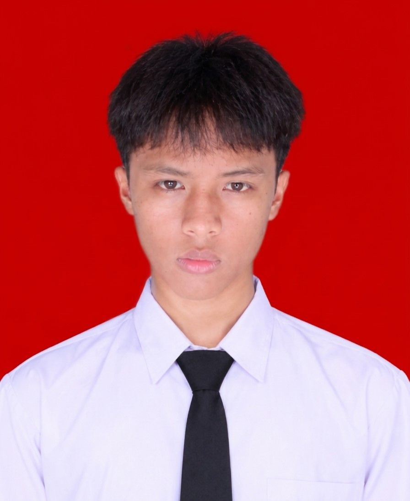

Portopolio
Rifadz Rivaldi Rahman
Siswa PPLG • Backend & Web Developer
Siswa SMK jurusan Pengembangan Perangkat Lunak dan Gim (PPLG) dengan minat dan fokus pada pengembangan aplikasi web. Terbiasa membangun sistem berbasis PHP, Laravel, dan MySQL, merancang REST API, serta mengelola dokumentasi Git. Siap berkontribusi dan belajar dalam program Praktek Kerja Lapangan (PKL) maupun posisi Junior Developer.
Kp. Jelekong, Baleendah
+62 859-5036-8097
rivaldirifadz@gmail.com
github.com/JamesKim17
linkedin.com/in/rifadz-rivaldi-rahman-16b281450

Proyek UJIKOM
Pengalaman Proyek
Sistem Informasi Manajemen Alat
PHP
Laravel
MySQL
Tailwind CSS
Docker
- Mengembangkan aplikasi web manajemen peminjaman dan pengembalian alat dengan fitur multi role (Admin, Petugas, Peminjam).
- Merancang struktur database relasional dan REST API untuk mencatat riwayat transaksi secara real-time.
- Melakukan pengujian fungsional aplikasi (positive & negative test case) untuk memastikan alur sistem berjalan lancar.
Keahlian
Hard Skills (Keahlian Teknis)
Bahasa Pemrograman
PHP
JavaScript
SQL
HTML
CSS
Framework & Tools
Laravel
Tailwind CSS
Git & GitHub
Docker
Postman
VS Code
Soft Skills (Keahlian Non-Teknis)
Problem Solving
Pemecahan Masalah
Kerja Tim
Teamwork & Kolaborasi
Manajemen Waktu
Time Management
Pendidikan
SMK NEGERI 7 BALEENDAH
Rekayasa Perangkat Lunak (PPLG)
- Pelajari dasar alur pemrograman, bahasa pemrograman dan alat yang digunakan.
- Mengembangkan keterampilan alur pemrograman, bahasa pemrograman, serta penggunaan alat yang digunakan.